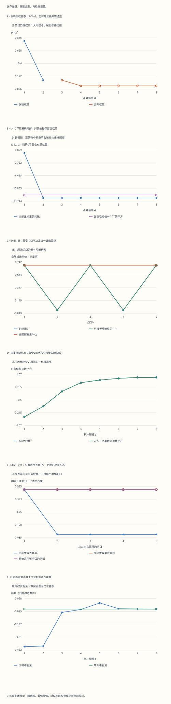

本页目录
量子多体 · 从Schmidt分解到全链张量压缩
六个自旋只有64个复振幅，足以把张量网络的核心步骤完整展开：重排、分解、截断、收缩，以及检查损失了什么。
前置：纠缠与量子信息、数值线性代数中的SVD。如果对约化密度矩阵还不熟悉，先回到量子信息课核对偏迹。
完成后应能：从系数矩阵读出纠缠谱，实际构造一条开放边界MPS，用保存的张量重建全态，并分别检查压缩误差、物理观测和方差。
1. 接口宽度到底在限制什么
把六个自旋从左到右编号1至6。第 \(k\) 个自旋之后切开，左边有 \(2^k\) 个基态，右边有 \(2^{6-k}\) 个基态。一般纯态需要64个复数： \(|\psi\rangle=\sum_{s_1,\ldots,s_6}c_{s_1\cdots s_6}|s_1\cdots s_6\rangle\)，其中 \(s_j=0,1\)，且 \(\sum|c|^2=1\)。
先问一个具体问题：左右两边需要多少条彼此独立的关联通道，才能保存这个态？这里的通道数是矩阵的秩，不是粒子的数量，也不等于一个远程通信协议的速率。通道的权重同样重要：一百条极弱通道可能比两条同等重要的通道更容易近似舍弃。
本页固定六站点，故意保留完整态作参照。把64个振幅预先算出来再压缩，不能证明算法在任意大系统中都高效；它让每一步可以检查，随后才接入直接操作张量的大链算法。
2. 复系数矩阵与Schmidt分解
把二进制字符串的左、右部分分别当作行列编号：
按从大到小排列奇异值 \(\sigma_i\ge0\)，令 \(p_i=\sigma_i^2\)。它们是约化密度矩阵的非零谱，满足 \(\sum_i p_i=1\)。本页约定纠缠谱为 \(\xi_i=-\ln p_i\)，纠缠熵为 \(S=-\sum_i p_i\ln p_i\)；\(p_i=0\) 时熵贡献取连续极限0，而 \(\xi_i\) 不放到一个伪造的有限高度上。
复数的共轭不能省略。若 \(u_i,v_i\) 指SVD矩阵 \(U,V\) 的列向量，则态展开是 \(|\psi\rangle=\sum_i\sigma_i|u_i\rangle_A|\overline{v_i}\rangle_B\)。 也可以把右侧共轭列直接命名为Schmidt基矢；关键是定义前后一致。
练习1：为什么对一个自旋施加相位门不改变切口谱？
对每个站点施加 \(\operatorname{diag}(1,e^{ij\theta})\)。无论在哪个切口，这些门都能写为左右两侧的乘积 \(U_A\otimes U_B\)，因此 \(C\mapsto U_A C U_B^T\)。 转置的 \(U_B^T\) 仍是幺正矩阵，所以奇异值不变。振幅一般变成复数，但“出现虚部”本身不是纠缠增加的证据。
实验中的相位控制就是这一组门。比较“复随机态压缩”和“局部相位旋转”两个预设，各切口权重应一致。固定Hamiltonian的能量却可能变化，因为我们改变了态，未同时变换观测算符。
3. 四种态，把“复杂”拆成不同含义
乘积态 \(|000000\rangle\) 在五个切口上的精确秩都是1。GHZ态 \((|000000\rangle+|111111\rangle)/\sqrt2\) 的五个秩都是2，每处熵为 \(\ln2\)：宏观分支的叠加不必要求随链长增长的键维。
相邻Bell对 \(|\Phi^+\rangle_{12}|\Phi^+\rangle_{34}|\Phi^+\rangle_{56}\) 的秩依次为 \(2,1,2,1,2\)。切在一对内部时需要两条通道，切在完整Bell对之间时只需一条。开放链cluster态由 \(|+\rangle^{\otimes6}\) 经过五个相邻CZ门制备，每个切口只有一条跨界纠缠边，精确秩为2。
实验还提供固定种子的复随机向量。它是一份可复现的64维数据，不能据此宣称验证了Haar随机态的平均熵或某个热力学极限。
练习2：Bell对链需要的统一键维是多少？最窄的切口又在哪里？
五个切口的秩是 \(2,1,2,1,2\)，因此精确表示所需的最小统一键维是最大值2。第2、4个切口最窄，但它们不能决定整条链的统一容量。
开放边界MPS的第 \(k\) 条内部键取值最多为 \(\chi_k\)，故 \(r_k\le\chi_k\)。给定一个态，在允许逐步精确SVD构造的情况下，最小统一键维为 \(\max_k r_k\)。这里说的是表示这个指定态，尚未解决如何找到某个Hamiltonian的基态。
4. 低熵、高秩与浮点阈值
谱 \((0.8,0.1,0.1)\) 的熵约为0.639032，小于 \(\ln2\approx0.693147\)，但精确秩仍为3。必要条件 \(S\le\ln\chi\) 不能反过来当作“原始态有rank不超过 \(\chi\)”的证明。
更明显的例子是中间切口的八个权重 \(p_0=1-\varepsilon\)、\(p_1=\cdots=p_7=\varepsilon/7\)。 只要 \(\varepsilon>0\)，精确秩就为8；当 \(\varepsilon=10^{-12}\) 时，却只需丢弃总权重 \(10^{-12}\) 就得到单通道近似。
网页单独显示数值秩：数出 \(\sigma_i>10^{-6}\) 的项。这个阈值只是教学显示的诊断口径，不用于截断张量。在上述例子中，小奇异值约为 \(3.78\times10^{-7}\)，数值秩会显示1，而可解析精确秩仍是8。程序保留微小权重并直接求尾和，避免用 \(1-\text{保留权重}\) 相减时损失有效数字。
练习3：对三权重态，χ=2时究竟丢了多少？
保留0.8与0.1，丢弃权重为0.1。归一化以后，保留权重变成 \(8/9,1/9\)，与原态的重叠振幅为 \(\sqrt{0.9}\)，平方保真度为0.9。
原始熵小于 \(\ln2\)，却仍达不到0.99的平方保真度目标。实验把这一谱放在中间切口，具体非零基底为 \(|000000\rangle,|001001\rangle,|010010\rangle\)；其他切口的谱需要重新重排计算。
5. 单个切口：实际重建最优近似
保留前 \(\chi\) 个奇异值，重建未归一化系数矩阵 \(C_\chi=U_\chi\Sigma_\chi V_\chi^\dagger\)。在这个切口的矩阵秩约束下，Eckart–Young定理给出
再把 \(C_\chi\) 展平成向量并归一化为 \(|\phi_\chi\rangle\)，得到 \(F=|\langle\psi|\phi_\chi\rangle|=\sqrt{1-\varepsilon_\chi}\)，\(F^2=1-\varepsilon_\chi\)。 本页的 \(F\) 始终是重叠振幅，\(F^2\) 始终是平方保真度。完整表保存真正重建的64个振幅，再直接测量重叠，不能只把同一个尾和公式复制成三列就称为独立验证。
若截断位置处有相等的奇异值，最优保留子空间可能不唯一。不同SVD实现可以返回不同基矢乃至不同近似态，而达到相同最优误差；此时应比较误差和适当的不变量，不能要求每个奇异向量的字节都相同。
练习4：丢弃权重与归一化态距离有什么区别？
未归一化误差平方是 \(\varepsilon\)。选取使重叠为正的相位后，归一化态距离平方为 \(2-2\sqrt{1-\varepsilon}=2\varepsilon/(1+\sqrt{1-\varepsilon})\)。 二者在很小的 \(\varepsilon\) 时接近，但不是同一个定义。
对GHZ的单通道近似，\(\varepsilon=1/2\)，归一化态距离平方则为 \(2-\sqrt2\approx0.585786\)。比较算法误差之前，必须先对齐是否归一化、是否平方，以及相位如何处理。
6. 从左到右，把SVD变成六个张量
第一步把原态重排为 \(2\times32\)，做SVD后保留至多 \(\chi\) 列。把左侧正交列重命名为 \(A^{s_1}_{1a_1}\)，将剩余乘积 \(\Sigma V^\dagger\) 传给下一步。第二步把余量重排为 \((2r_1)\times16\)，其中行索引是 \((a_1,s_2)\)。继续进行，直到最后一个张量。
每个中间张量都满足左规范条件 \(\sum_{a_{j-1},s_j}\overline{A^{s_j}_{a_{j-1}a}}A^{s_j}_{a_{j-1}b}=\delta_{ab}\)。 这保证已经处理过的左侧基是正交的。实验保存每个张量的所有复数元素，并实际按上式收缩；最后的64个振幅可以与输入逐项比较。
本实现中间不归一化，便于记绝对权重账。只有全部步骤结束后，才将重建态归一化用于物理观测。张量规范不是额外的物理自由度：在内部键插入 \(X X^{-1}\) 不改变收缩后的态，但任意规范下的局部矩阵范数未必就是物理态范数。
7. 全链误差：哪一组尾和可以相加
记第 \(j\) 步从当前未归一化余量丢掉的权重为 \(\delta_j\)。它与“对原始态在第 \(j\) 个切口独立做SVD所得的尾部”一般不同。
在精确算术和正交投影下，本页这一次从左到右的压缩具有嵌套的保留子空间。早先丢掉的分量与以后仍能保留的全部分量正交，因此
最后一个等式使用归一化的重建态来计算保真度。程序同时记录尾和、直接重建距离、保留范数和内积；浮点计算的微小差异通过独立复算监测，上式不是一个包含严格浮点舍入界的证书。
这些等式适用于这里的嵌套投影过程。不能拿它们去直接替代多步时间演化的误差传播：两个压缩之间若还有幺正门，投影子空间未必嵌套，见张量时间演化与误差。
练习5：GHZ为什么得到1/2，而不是1/32？
从左向右以 \(\chi=1\) 压缩GHZ，第一步选择一个等权分支并丢弃另一半，\(\delta_1=1/2\)。留下的态已经是一个未归一化乘积态，后四步的实际丢弃权重都是0。所以全链 \(F^2=1/2\)。
若另外对原始GHZ的五个切口独立计算，每处的最佳单通道保真度都为1/2。将它们相乘得到1/32，是把五次“针对同一个原始态的分析”误当成了五次“作用于更新后余量的算法”。实验的步骤图把这两组尾部放在一起比较。
8. 压缩并没有自动求出基态
给定Hamiltonian \(H=-J\sum_{j=1}^{5}Z_jZ_{j+1}-h\sum_{j=1}^{6}X_j\)，本页用对角ZZ项和单比特翻转完整计算 \(H|\psi\rangle\)。压缩前后都测量能量、平均磁化、相邻ZZ和完整残差方差。
压缩原始态是在尽量保存这个态；DMRG则在MPS族中变分降低能量。两者的目标不同。逐步SVD在每个当前矩阵上最优，并不保证得到所有有限键维MPS中的全局最佳近似，也不保证压缩后能量单调降低。
对归一化纯态，保守观测界为 \(|\langle H\rangle_\phi-\langle H\rangle_\psi|\le2\|H\|\sqrt{1-F^2}\)， 且这里可用 \(\|H\|\le5|J|+6|h|\)。它可能很松；实验同时给出实际能量差，避免把一个宽上界读成实际误差。
练习6：为什么能量很接近，也未必意味着态很接近？
能量只是一个观测的平均值。不同本征态的叠加可以给同样的均值，近简并能级之间也可能有很小能量差却完全正交。若要从能量误差推到基态重叠，需要已知基态能量、谱隙及其适用条件；本页没有把这些外部信息悄悄补上。
上面的观测界是“态接近 ⇒ 有界观测接近”的方向，不能无条件倒过来。网页保留全态保真度与完整方差，正是为了避免只用一条能量曲线验收。
9. 完整方差、局部能量与节点
完整方差为 \(\operatorname{Var}_\psi(H)=\|(H-E)|\psi\rangle\|^2/\|\psi\|^2\)，其中 \(E=\langle H\rangle\)。 变分蒙卡常按 \(p_s=|\psi_s|^2/\|\psi\|^2\) 采样，使用非零振幅处的局部能量 \(E_{\rm loc}(s)=(H\psi)_s/\psi_s\) 估计均值。
对于离散基底，若试探态有精确节点，局部能量方差需要格外小心。设 \(S=\{s:\psi_s\ne0\}\)，直接拆开完整残差可得
最后一项在只按 \(|\psi|^2\) 采样时不会出现。若没有节点，或Hamiltonian不把态送到节点上，它才为零。本页把节点的局部能量记为不适用，并逐构型列出残差，不用除以一个人为小数掩盖问题。
练习7：乘积态|000000〉的样本方差为什么会骗人？
它只以概率1采到全零构型。在该构型上 \(E_{\rm loc}=-5J\)，所以样本局部能量没有波动。但 \(-h\sum_jX_j\) 还产生六个互相正交、各有振幅 \(-h\) 的单翻转态，它们都在原态的节点上。
因此 \(E=-5J\)，完整方差为 \(6h^2\)。默认 \(J=h=1\) 时能量为−5，样本局部方差为0，完整方差为6。把横场设为0后，完整方差才为0；若再取 \(J<0\)，这个零方差态也不是反铁磁耦合的基态。
10. 面积律、DMRG和神经拟设各自承诺什么
一维短程局域、有能隙等条件下的基态面积律解释了许多成功的MPS近似；但本页已经展示，低熵不等于固定小键维的精确表示。需要的近似键维还取决于误差目标、谱尾和系统规模。临界态、淬火后的长时态及二维系统需要重新检查这些条件。
DMRG的实际表现应以键维、多个初态、扫描收敛、能量和方差报告，不能对任意Hamiltonian预先承诺机器精度。二维PEPS与MERA改变网络结构，也引入各自的收缩代价或近似条件。
神经网络波函数扩大了可选择的试探态族。它的优点必须与采样、优化、对称性约束和独立基准一起评估；“表达力强”不自动消除符号/相位结构的困难，不保证找到全局最优，也不等于在所有问题上替代MPS。本站AI课程可帮助理解模型与优化，但多体物理的误差验收仍要落在观测和可复算的参照上。
11. 实验：先预测，再保存可重建的证据
先选GHZ与 \(\chi=1\)，读出五步丢弃权重，再把 \(\chi\) 改为2。接着选择微小尾部，比较线性权重图、对数图、解析精确秩和数值秩。最后比较复随机态及其局部相位旋转，检查谱不变而能量可能改变。
完整记录包含八项输入、64个原始振幅、每个切口的谱、六个张量、逐步权重、所有重建振幅及逐构型残差。下载以后可以独立收缩，不必相信网页的总结数字。
无脚本对照：六份记录包含输入态、全部切口、逐步张量、重建振幅与完整残差。每张图标明所用态族；连线只帮助比较离散数据。

| 预设 | χ | 中间切口熵 | 实际步尾和 | 全链F² | 原始切口F²乘积 | 原态完整方差 |
|---|---|---|---|---|---|---|
| ghz | 1 | 0.69314718 | 0.5 | 0.5 | 0.03125 | 6 |
| entropy | 2 | 0.63903186 | 0.1 | 0.9 | 0.81 | 16.302742 |
| tiny | 1 | 3.057702e-11 | 1e-12 | 1 | 1 | 6.0000045 |
| bells | 2 | 0.69314718 | 0 | 1 | 1 | 14 |
| random | 2 | 1.625649 | 0.644562 | 0.355438 | 0.25608124 | 12.376965 |
| phase | 2 | 1.625649 | 0.644562 | 0.355438 | 0.25608124 | 11.790817 |
下载六份完整记录。GHZ的五个原始切口F²乘积是1/32，实际全链F²却是1/2；请从保存的张量独立收缩核对。
练习8：怎样验收一个新的张量压缩实现？
至少选择乘积态、GHZ、Bell对、简并谱、微小非零尾部和一般复态。分别检查输入归一化、复数共轭、奇异值谱、左规范、保存张量的独立收缩和最终物理观测。用完整态残差检查误差，而不只复用同一套尾和公式。
对简并谱，不把另一套SVD给出的不同基矢直接判错；对微小尾部，要求相对误差检查，不能用宽绝对容差允许把正权重变成0。若要转向大链，就换成独立MPO收缩与可控小系统基准，并明确哪些完整态参照已无法继续使用。
12. 从压缩练习走向真正的变分计算
下一步在MPS范数与局部优化中构造环境度量，再到乘积MPS往返扫描核对每次能量变化。MPO与Krylov提供算符作用接口；全链方差与初态比较完整方差与局部残差；连续作业要求独立提交中间计算。
进一步阅读：Schollwöck的MPS综述，4.1与4.5节核对规范与截断；Orús的张量网络入门比较不同网络结构；Carleo与Troyer的神经网络波函数论文，附录A给出局部能量和随机优化的定义。本页的误差账本与节点反例直接从所写有限模型推导，不能据此宣称覆盖了所有张量算法或采样方法。